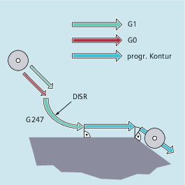

Die Funktion "Weiches An- und Abfahren (WAB)" dient dazu, im Startpunkt einer Kontur unabhängig von der Lage des Ausgangspunkts tangential anzufahren.
Die Funktion wird vorwiegend in Verbindung mit der Werkzeugradiuskorrektur eingesetzt.
Bei der Aktivierung der Funktion übernimmt die Steuerung die Aufgabe, Zwischenpunkte so zu berechnen, dass der Übergang in den Folgesatz (bzw. der Übergang vom Vorgängersatz beim Abfahren) entsprechend den angegebenen Parametern erfolgt.
Die Anfahrbewegung besteht aus maximal 4 Teilbewegungen. Der Startpunkt der Bewegung wird im Folgenden mit P0, der Endpunkt mit P4 bezeichnet. Dazwischen können maximal drei Zwischenpunkte P1, P2 und P3 liegen. Die Punkte P0, P3 und P4 sind immer definiert. Die Zwischenpunkte P1 und P2 können ja nach Parametrierung und geometrischen Verhältnissen entfallen. Beim Abfahren werden die Punkte in der umgekehrten Reihenfolge durchlaufen, d. h. beginnend mit P4 und endend mit P0.
mit einer Geraden:
G147 G340/G341 ... DISR=..., DISCL=..., DISRP=... FAD=...
mit einem Viertelkreis/Halbkreis:
G247/G347 G340/G341 G140/G141/G142/G143 ... DISR=... DISCL=... DISRP=... FAD=...
mit einer Geraden:
G148 G340/G341 ... DISR=..., DISCL=..., DISRP=... FAD=...
mit einem Viertelkreis/Halbkreis:
G248/G348 G340/G341 G140/G141/G142/G143 ... DISR=... DISCL=... DISRP=... FAD=...
| Anfahren mit einer Geraden |
| Abfahren mit einer Geraden |
| Anfahren mit einem Viertelkreis |
| Abfahren mit einem Viertelkreis |
| Anfahren mit einem Halbkreis |
| Abfahren mit einem Halbkreis |
| An- und Abfahren räumlich (Grundeinstellung) |
| An- und Abfahren in der Ebene |
| An- und Abfahrrichtung abhängig von der aktuellen Korrekturseite (Grundeinstellung) |
| Anfahren von links bzw. Abfahren nach links |
| Anfahren von rechts bzw. Abfahren nach rechts |
| An- bzw. Abfahrrichtung abhängig von der relativen Lage von Start- bzw. Endpunkt zur Tangentenrichtung |
|
Achtung: |
| Abstand des Endpunkts der schnellen Zustellbewegung von der Bearbeitungsebene DISCL=AC(...) Angabe der absoluten Lage des Endpunkts der schnellen Zustellbewegung |
| Angabe der absoluten Lage des Endpunkts der schnellen Zustellbewegung |
| Abstand des Punkts P1 (Rückzugsebene) von der Bearbeitungsebene |
| Angabe der absoluten Lage des Punkts P1 |
| Geschwindigkeit der langsamen Zustellbewegung Der programmierte Wert wirkt entsprechend dem aktiven Vorschubtyp (G-Gruppe 15). |
| Der programmierte Wert wird unabhängig vom aktiven Vorschubtyp als Linearvorschub (wie G94) interpretiert. |
| Der programmierte Wert wird unabhängig vom aktiven Vorschubtyp als Umdrehungsvorschub (wie G95) interpretiert. |
Weiches Anfahren (Satz N20 aktiviert)
Anfahrbewegung mit Viertelkreis (G247)
Anfahrrichtung nicht programmiert, es wirkt G140, d. h. WRK ist aktiv (G41)
Konturoffset OFFN=5 (N10)
Aktueller Werkzeugradius=10, damit ist der effektive Korrekturradius für WRK=15, der Radius der WAB-Kontur=25, so dass Radius der Werkzeugmittelpunktsbahn gleich DISR=10 wird
Endpunkt des Kreises ergibt sich aus N30, da in N20 nur Z-Position programmiert ist
Zustellbewegung
Von Z20 nach Z7 (DISCL=AC(7)) im Eilgang.
Anschließend nach Z0 mit FAD=200.
Anfahrkreis in X-Y-Ebene und Folgesätze mit F1500 (damit diese Geschwindigkeit in den Folgesätzen wirksam wird, muss der aktive G0 in N30 mit G1 überschrieben werden, andernfalls würde die Kontur mit G0 weiter bearbeitet werden).
Weiches Abfahren (Satz N60 aktiviert)
Abfahrbewegung mit Viertelkreis (G248) und Helix (G340)
FAD nicht programmiert, da bei G340 ohne Bedeutung
Z=2 im Startpunkt; Z=8 im Endpunkt, da DISCL=6
Bei DISR=5 ist Radius der WAB-Kontur=20, der Radius der Werkzeugmittelpunktsbahn=5
Wegfahrbewegungen von Z8 nach Z20 und die Bewegung parallel zur X-Y Ebene zu X70 Y0.
| Programmcode | Kommentar |
|---|---|
| $TC_DP1[1,1]=120 | ; Werkzeugdefinition T1/D1 |
| $TC_DP6[1,1]=10 | ; Radius |
| N10 G0 X0 Y0 Z20 G64 D1 T1 OFFN=5 | ; (P0 an) |
| N20 G41 G247 G341 Z0 DISCL=AC(7) DISR=10 F1500 FAD=200 | ; Anfahren (P3an) |
| N30 G1 X30 Y-10 | ; (P4 an) |
| N40 X40 Z2 | |
| N50 X50 | ; (P4 ab) |
| N60 G248 G340 X70 Y0 Z20 DISCL=6 DISR=5 G40 F10000 | ; Abfahren (P3 ab) |
| N70 X80 Y0 | ; (P0 ab) |
| N80 M30 |
Siehe auch:
Weiches An- und Abfahren (G140 bis G143, G147, G148, G247, G248, G347, G348, G340, G341, DISR, DISCL, DISRP, FAD, PM, PR): Weitere Informationen
Weiches An- und Abfahren mit erweiterten Abfahrstrategien (G460, G461, G462)